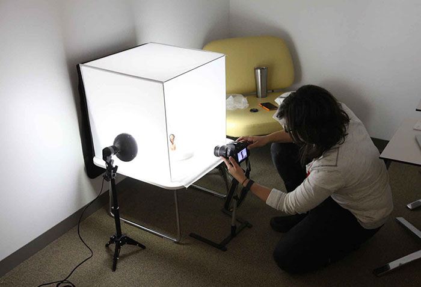
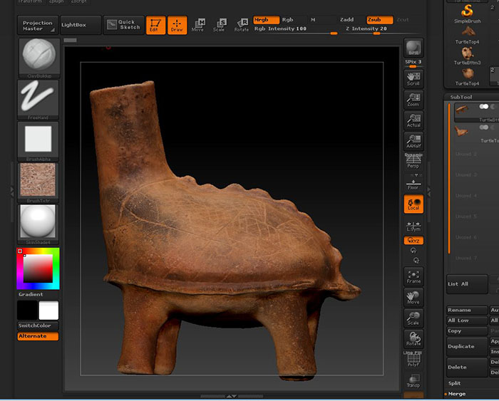
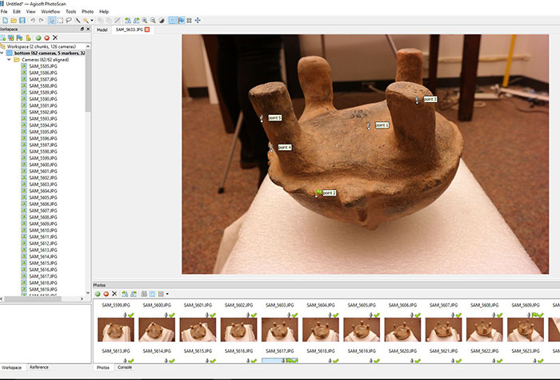
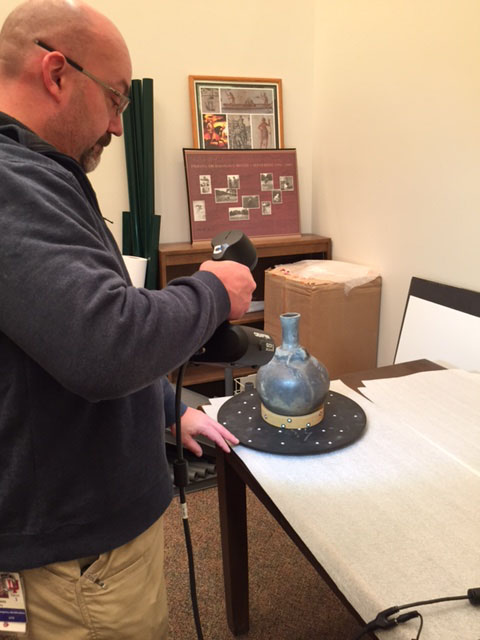

Methods
There are a number of methods currently in use for
capturing 3D data as well as a growing number of software programs and techniques for processing and
editing models. Choosing among them involves evaluating data capture and processing time, technician
budgeting, equipment and software costs, and necessary access to processing hardware. The size,
format, material, location, and portability of objects also need to be considered. 3D projects
should start with specific requirements in mind including the intended goals or research questions
that may be addressed with the final product. Will the models need to represent fine detail and be
rendered as accurately at possible for scientific measurement and analysis? Or are they intended
mainly for public exhibition or educational purposes?
For this project, we employed two methods of data capture:
photogrammetry and structured light scanning. We will discuss these approaches and highlight the
strengths and limitations of both. We will also discuss differences in the rendering and editing
software available for these methods.
Photogrammetry
Multi-image photogrammetry is a 3D modeling technique that uses multiple 2D images of
an object to record, measure, and match corresponding points on an object in order to build a 3D
representation. Typically a series of images that incorporate overlapping views are taken from high,
mid, and low angles of the object in order to record and match as many points on the surface of the
object as possible. Two methods of capturing these images are to rotate the object 360 degrees in
front of a static camera position (except for changes in camera height and angle) or for the camera
to move 360 degrees around the static object. Which method is used will depend on the size and
portability of the object, as well as lighting conditions, space constraints, and modeling software
preferences. All of the models used for this project were small enough for us to experiment with
both techniques.
Moving Camera

Static Camera
For the purposes of this project we started out using the AutoDesk ReMake
processing software. ReMake is offered free for students and educators, has some handy built-in
editing features, and can be processed fairly easily and quickly using the cloud-based build
option. However, ReMake has some drawbacks in its sensitivity to image background information.
Of the two techniques for camera position, the moving camera method initially produced cleaner,
more accurate meshes. Images taken while the photographer moves around the object will capture
changing background information. This allows ReMake to match overlapping points and reconstruct
the field of view with more accuracy.
For our testing of the alternative method, where the object is rotated instead, we
used a turntable and professional light-tent. ReMake and other processing programs seem to be
particularly sensitive to the changes, or lack of changes, in the background of an object using
this method. To get the best results, a uniform and monochromatic backdrop needs to be used.
Turntables should also be covered in the same color material, and both should contrast enough
with the color of the object in order for the processing software to distinguish it
properly.
Ethofoam Support
Another major consideration in our project was the need to capture images of both
the top and bottom of the vessels in order to view models from any angle. Although we were able
to use pre-made ethofoam supports to invert vessels in a few cases, more asymmetrical artifacts
required the use of custom-made supports (made by GBL staff) to capture data on their
bases.
ReMake is limited in that it cannot process or merge both upright and inverted
model images into one mesh. Two models, top and bottom, must be created separately in ReMake and
then exported into another program, such as Pixologic's ZBrush, to create a merged model. ZBrush is a powerful digital modeling and sculpting program, but can be prohibitively expensive and has a steep learning curve. ZBrush also does not offer a point matching feature which makes it
difficult to properly size, rotate, and align two objects into one seamless model.
ZBrush

Agisoft PhotoScanis another software program that can be
used to process images
and generate 3D models. This program allows you to import both top and bottom image series and
create a single merged model without having to export files into ZBrush or other editing
software. PhotoScan provides a tool for selecting matching points along the surface of the model
in both series in order to more accurately align the two meshes.
PhotoScan

PhotoScan is more expensive to purchase than ReMake, only offering a 30 day
free trial of its basic version and no long-term free versions for students or educators. It
also requires a lot of processing power and processing time, depending on the quality
desired for the final model. We processed a version of the Turtle Effigy in PhotoScan
using a lower quality setting based on the time and resources available to us. The result is
adequate for exhibition and educational purposes at this point, but may not be accurate or
photorealistic enough for detailed research and analysis.
Structured Light Scanning
With the assistance of Jeff Rogers from IU's Advanced Visualization Laboratory, we also
experimented with structured light scanning.
Go!SCAN 50

This method captures data through the use of a hand-held scanner that projects light across
the surface of an object. The software recognizes disruptions in the pattern and uses these
to reconstruct geometric representations of the object. Color and texture detail are also
captured by a camera sensor built into the scanner. A Creaform Go!SCAN 50 scanner was used
to model 3 objects from our project, which we used to compare with the versions created with
photogrammetry. As in other methods of data capture, the material, lighting, and shape of
the object must be taken into consideration. Highly reflective or translucent materials can
create confusion about the precise location of an object's surface.
Objects that are too symmetrical are also a problem, as the scanner may not find enough
different points to properly align the image data. Special adhesive point markers can be
placed on the turntable or object in these cases to help identify points.
As in PhotoScan, the Creaform software that comes with the Go!SCAN allows the user to clean
and edit extraneous data and includes a point matching system for aligning upright and
inverted model data.
Alignment Markers
The combined Go!SCAN data capture and processing steps provide for a faster and
more streamlined workflow for 3D modeling. However, structured light scanners are a far more
expensive option than photogrammetry equipment, with the Go!SCAN 50 currently costing around
$25,000. We also felt that the results from our photogrammetry versions were far more accurate
in terms of surface detail and texture. In the Models section of this
site, you can reference a color-corrected image of the effigy vessel, representing the vessel's
true color, along side the models produced by photogrammetry and structured light scanning.
Other considerations:
Image format jpeg vs. RAW/Tiff
For this project, we captured our images in RAW, but processed all of our
photogrammetry models using the jpeg file format. Although we would like to experiment with
tiffs converted from RAW in the future, these large files require more powerful processing
hardware and longer processing times. A few experts we spoke with (Jeff Rogers & Matt Brennan)
also indicated that sometimes higher resolution images can also introduce extra noise that may
make it difficult for processing software to stitch images together.
Lighting and camera settings
Often the most time-consuming element of our photogrammetry process was selecting
the proper lighting and camera settings for image capture. Because we were shooting indoors, we
needed to balance having enough even overhead lighting for reasonable exposure times without
creating glare on the surface of the objects. Larger aperture settings are also required to
capture sufficient depth of field and insure that all surfaces of the object are in focus. As
this also reduces the amount of light available to the camera sensor, we used tripods and cable
shutter releases in order to set longer exposure times.
Color
It's important to note that color texture maps of one object can have many different
appearances. While objects for this project were photographed/scanned in the same room and
under the same lighting, there are clear variations amongst each method. Color accuracy will
ultimately depend on the purpose of a 3D asset. For acientific measurement and analysis or
archival purposes, objects should always be photographed with a color chart to correct for
white balance in post-processing.
See the Metadata section for more documentation on our methods
and procedures.